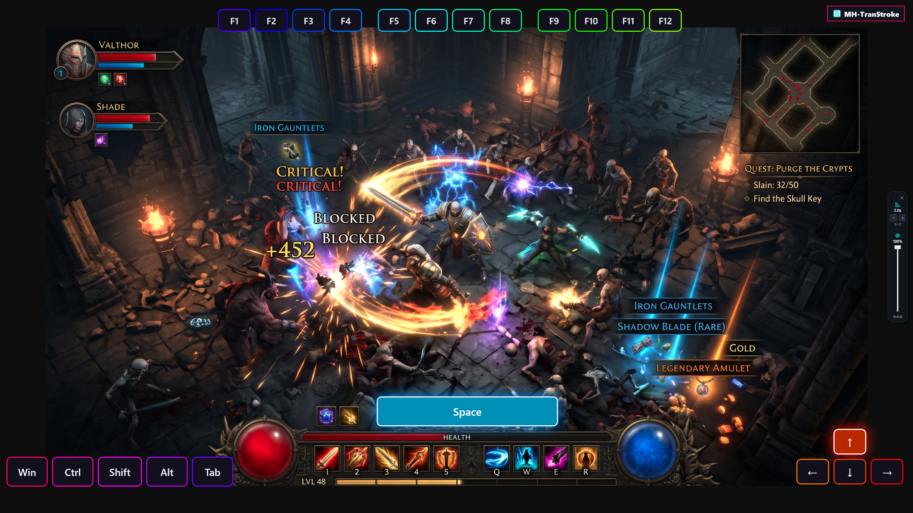

MH-TranStroke
配信・チュートリアル動画向けのリアルタイムキー入力表示ツール

概要
MH-TranStroke は、ゲーム実況配信やプログラミング・3Dモデリング等の作業配信、操作解説チュートリアル動画において、「今どのキーやショートカットが押されているか」を画面上へリアルタイムに表示できる軽量Windowsオーバーレイツールです。
オーバーレイ表示は完全なクリック透過に対応しているため、背後のゲームやアプリケーションのクリック・ドラッグ操作を一切妨げません。また、パスワードや個人情報入力時にワンアクションで表示を隠せるステルスモードも備えています。
主な機能
- 完全クリック透過：キー表示の上からでも、背後のゲームやアプリをそのまま操作できます。
- 固定キーHUD ＆ 動的ストローク：ファンクションキー（F1〜F12）・修飾キー・Space・矢印キーの固定表示に加え、文字・数字・記号や
Ctrl + Cなどのショートカットを合成してポップアップ表示します。 - 3種類のビジュアルスタイル：落ち着いた「シンプル」、発光の美しい「ネオン」、RGB循環・波・打鍵発光の「ゲーミング」から選択できます。
- 自由なレイアウト調整：キーグループごとに画面上の好きな位置へドラッグ移動・個別拡縮でき、設定はディスプレイごとに自動保存されます。
- マルチモニター同時表示：複数のディスプレイへ同時にキー入力を表示でき、ケーブルの抜き差しや解像度変更にも自動追従します。
- プライバシー保護（ステルスモード）：
Shift + F12などのショートカットで瞬時にキー表示を無効化（極薄化）できます。 - ローカル完結 ＆ 多言語対応：入力情報はすべてローカル端末内で処理され外部送信は行いません。日本語 / English の切り替えに対応しています。
基本的な使い方
- 起動する：BOOTH（ポータブル版）はZIPを展開して
MHTranStroke.exeを実行します（インストール不要）。Microsoft Store版はインストール後にスタートメニュー等から起動します。 - そのまま操作する：画面上にキーHUDが表示されます。オーバーレイはクリック透過のため、背後のゲームやブラウザ、制作ソフトを通常通り操作できます。
- メニューを開く：設定の変更や終了は、画面右下（タスクトレイ）に常駐しているアイコンを右クリックして行います。左クリックするとステルスモードを素早く切り替えられます。
- 配信・録画ソフト（OBS Studio等）での映し方：MH-TranStroke はデスクトップ画面上に直接オーバーレイ表示するツールです。OBS Studio 等で「画面キャプチャ（ディスプレイキャプチャ）」を使用している場合は、そのまま映像内にキー表示が取り込まれます（ゲームキャプチャや特定アプリ単体のウィンドウキャプチャのみを使用している場合、デスクトップ上のオーバーレイは映りません）。
ショートカット ＆ クイック操作
配信中や作業中でも、タスクトレイやキーボード操作から素早くモードを切り替えられます。
| ステルスモード切替 |
Shift + F12（設定により2回連続押しに変更可）または、タスクトレイアイコンの左クリック / 画面右上の「MH-TranStroke」ロゴを左ダブルクリック |
|---|---|
| サイズ＆位置調整モード切替 |
Shift + F11（設定により2回連続押しに変更可）または、タスクトレイ右クリックメニュー「📐 サイズ＆位置調整モード」 |
| 右上ロゴの操作 |
左ドラッグ：ロゴ位置の移動 左ダブルクリック：ステルスモード切替 右クリック：メニュー表示（設定・ロゴ非表示など） |
Shift + F12 を押すと通常表示に復帰します。
設定項目の詳細
タスクトレイアイコンの右クリックメニューから「⚙ 設定 (Settings)」を開くと、以下の項目をリアルタイムにプレビューしながらカスタマイズできます。設定ウィンドウ右上のボタンからは、言語（自動 / 日本語 / English）とUIテーマ（システム追従 / ダーク / ライト）の切り替えも可能です。
表示ディスプレイ（マルチモニター・同時表示）
チェックを入れたすべてのモニターにキーストロークを同時に表示します。「全画面で表示」「メインのみ」ボタンで一括選択できるほか、ケーブルの抜き差しやモニター設定の変更にも自動追従します。配置レイアウトはディスプレイ・解像度・DPI拡大率ごとに自動保存されます。
ステルスモード切替 ＆ ショートカット設定
他のゲームやソフトウェアと Shift + F11 / Shift + F12 のショートカットが競合する場合は、「ショートカットをファンクションキー2回押しに変更する」にチェックを入れてください。誤爆を防ぎつつ、素早い2回押しで切り替えられるようになります。
サイズ＆位置調整モード
チェックを入れるとクリック透過が一時的に解除され、画面上の5つのキーグループ（ファンクションキー / 修飾キー / スペースキー / 矢印キー / 動的ストローク）を自由にカスタマイズできます。
- 個別の移動・拡縮：各グループの枠をドラッグして好きな位置へ移動できます。枠の上でマウスホイールを回すか、枠右下のグリップをドラッグすると個別に拡大・縮小（0.5x〜3.0x）できます。
- 全体の表示サイズ一括変更：
0.8x/1.0x (標準)/1.25x/1.5x/1.75x/2.0xのプリセットボタンで全グループのサイズをまとめて変更できます。 - 初期状態にリセット：「🔄 サイズと位置を初期状態にリセット」を押すと、現在のディスプレイのデフォルト配置に戻ります。
全体の透過率 ＆ 簡易スライダー
- 不透明度：20%〜100%の範囲でオーバーレイ全体の濃さを調整します（初期値：85%）。
- 画面右側の透過率スライダー：有効にすると、画面右端にコンパクトな縦型スライダーが常駐し、配信画面を見ながら不透明度や全体サイズ（
+/-・1.0xリセット）を素早く微調整できます。
ビジュアルスタイル ＆ ネオンカラー
- シンプル：白黒ベースの半透明デザイン。解説動画や落ち着いた作業配信に適しています。
- ネオン：ネオン管のような発光エフェクト付きデザイン。カラーピッカー（HEXコード指定対応）または5色のプリセット（サイバーシアン / ネオンマゼンタ / ゲーミンググリーン / サンセットオレンジ / ホワイト）から発光色を選べます。
- ゲーミング：7色のRGBグラデーション演出。動作パターンを「シンクロ (循環)」「ウェーブ (流れ)」「リアクティブ (打鍵)」の3種類から選択できます。
キー表示枠の背景
キーHUDの背景を「半透明ダーク」「透明」「カスタムカラー」から選択できます。カスタムカラー選択時は、カラーピッカーのアルファチャンネル（A）で背景の透過度を細かく指定できます。
修飾キー並び順
左下に表示される修飾キー（Tab・Win・Ctrl・Shift・Alt）の表示順を、お使いのキーボード配列や好みに合わせて調整できます。ボタンのドラッグ＆ドロップや ◀ ▶ ボタンでの並び替えのほか、「プログラマー推奨」「ゲーミング定番」「Windows標準」「Tab除外配列」などのプリセットから選ぶことも可能です。
キー表示設定（パーツ別の表示・非表示）
用途に合わせて必要なパーツだけを表示できます。以下の項目を個別にオン／オフできます。
- 画面右上にアプリ名ロゴを表示
- ファンクションキー（F1-F12）を表示
- 修飾キー（Win, Ctrl, Shift, Alt）を表示
- スペースキーを表示
- 矢印キー（↑ ← ↓ →）を表示
- 動的ストローク（文字・ショートカット）を表示
主な仕様・動作環境
| 対応OS | Windows 10 / Windows 11 (64bit) |
|---|---|
| 配布形態 | BOOTH（ポータブル版・ランタイム不要の自己完結型） / Microsoft Store |
| 設定ファイルの保存先 | %AppData%\MahorobaLab\MHTranStroke\settings.json |
| データ送信 | なし（すべてローカル処理。BOOTH版のみ起動時にGitHub公開JSONで更新確認を実施） |
| 商用・配信利用 | 個人利用・商用利用・収益化配信での利用可能（クレジット表記不要） |
関連ヘルプ・トラブルシューティング
Windows SmartScreenの警告が出た場合の対処方法や、アンインストール手順、その他共通のお問い合わせについては、ポータルの共通ヘルプ・よくある質問（FAQ）をご参照ください。